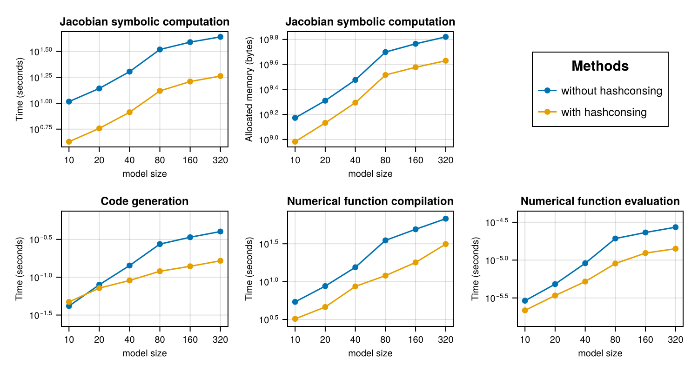

BCR Symbolic Jacobian
The following benchmark is of 1122 ODEs with 24388 terms that describe a stiff chemical reaction network modeling the BCR signaling network from Barua et al.. We use ReactionNetworkImporters to load the BioNetGen model files as a Catalyst model, and then use ModelingToolkit to convert the Catalyst network model to ODEs.
The resultant large model is used to benchmark the time taken to compute a symbolic jacobian, generate a function to calculate it and call the function.
using Catalyst, ReactionNetworkImporters,
TimerOutputs, LinearAlgebra, ModelingToolkit, Chairmarks,
LinearSolve, Symbolics, SymbolicUtils, SymbolicUtils.Code, SparseArrays, CairoMakie,
PrettyTables
datadir = joinpath(dirname(pathof(ReactionNetworkImporters)),"../data/bcr")
const to = TimerOutput()
tf = 100000.0
# generate ModelingToolkit ODEs
prnbng = loadrxnetwork(BNGNetwork(), joinpath(datadir, "bcr.net"))
show(to)
rn = complete(prnbng.rn; split = false)
obs = [eq.lhs for eq in observed(rn)]
osys = convert(ODESystem, rn)
rhs = [eq.rhs for eq in full_equations(osys)]
vars = unknowns(osys)
pars = parameters(osys)Parsing parameters...done
Creating parameters...done
Parsing species...done
Creating species...done
Creating species and parameters for evaluating expressions...done
Parsing and adding reactions...done
Parsing groups...done
────────────────────────────────────────────────────────────────────
Time Allocations
─────────────────────── ────────────────────────
Tot / % measured: 7.13s / 0.0% 876MiB / 0.0%
Section ncalls time %tot avg alloc %tot avg
────────────────────────────────────────────────────────────────────
────────────────────────────────────────────────────────────────────128-ele
ment Vector{SymbolicUtils.BasicSymbolic{Real}}:
p1
p2
p3
p4
p5
p6
p7
p8
p9
p10
⋮
_rateLaw2
_rateLaw3
_rateLaw4
_rateLaw5
_rateLaw6
_rateLaw7
_rateLaw8
_rateLaw9
_rateLaw10The sparsejacobian function in Symbolics.jl is optimized for hashconsing and caching, and as such performs very poorly without either of those features. We use the old implementation, optimized without hashconsing, to benchmark performance without hashconsing and without caching to avoid biasing the results.
include("old_sparse_jacobian.jl")old_executediff (generic function with 2 methods)SymbolicUtils.ENABLE_HASHCONSING[] = false
@timeit to "Calculate jacobian - without hashconsing" jac_nohc = old_sparsejacobian(rhs, vars);
SymbolicUtils.ENABLE_HASHCONSING[] = true
Symbolics.toggle_derivative_caching!(false)
Symbolics.clear_derivative_caches!()
@timeit to "Calculate jacobian - hashconsing, without caching" jac_hc_nocache = old_sparsejacobian(rhs, vars);
Symbolics.toggle_derivative_caching!(true)
for fn in Symbolics.cached_derivative_functions()
stats = SymbolicUtils.get_stats(fn)
@assert stats.hits == stats.misses == 0
end
Symbolics.clear_derivative_caches!()
@timeit to "Calculate jacobian - hashconsing and caching" jac_hc_cache = Symbolics.sparsejacobian(rhs, vars);
@assert isequal(jac_nohc, jac_hc_nocache)
@assert isequal(jac_hc_nocache, jac_hc_cache)
jac = jac_hc_cache
args = (vars, pars, ModelingToolkit.get_iv(osys))
# out of place versions run into an error saying the expression is too large
# due to the `SymbolicUtils.Code.create_array` call. `iip_config` prevents it
# from trying to build the function.
kwargs = (; iip_config = (false, true), expression = Val{true})
@timeit to "Build jacobian - no CSE" _, jac_nocse_iip = build_function(jac, args...; cse = false, kwargs...);
@timeit to "Build jacobian - CSE" _, jac_cse_iip = build_function(jac, args...; cse = true, kwargs...);
jac_nocse_iip = eval(jac_nocse_iip)
jac_cse_iip = eval(jac_cse_iip)
defs = defaults(osys)
u = Float64[Symbolics.fixpoint_sub(var, defs) for var in vars]
buffer_cse = similar(jac, Float64)
buffer_nocse = similar(jac, Float64)
p = Float64[Symbolics.fixpoint_sub(par, defs) for par in pars]
tt = 0.0
@timeit to "Compile jacobian - CSE" jac_cse_iip(buffer_cse, u, p, tt)
@timeit to "Compute jacobian - CSE" jac_cse_iip(buffer_cse, u, p, tt)
@timeit to "Compile jacobian - no CSE" jac_nocse_iip(buffer_nocse, u, p, tt)
@timeit to "Compute jacobian - no CSE" jac_nocse_iip(buffer_nocse, u, p, tt)
@assert isapprox(buffer_cse, buffer_nocse, rtol = 1e-10)
show(to)───────────────────────────────────────────────────────────────────────────
───────────────────────────────────
Time
Allocations
───────────────
──────── ────────────────────────
Tot / % measured: 483s / 9
3.9% 36.1GiB / 91.5%
Section ncalls time %tot
avg alloc %tot avg
───────────────────────────────────────────────────────────────────────────
───────────────────────────────────
Compile jacobian - no CSE 1 192s 42.3%
192s 3.05GiB 9.2% 3.05GiB
Compile jacobian - CSE 1 76.6s 16.9%
76.6s 0.95GiB 2.9% 0.95GiB
Calculate jacobian - without hashconsing 1 75.8s 16.7%
75.8s 10.5GiB 31.9% 10.5GiB
Calculate jacobian - hashconsing, without caching 1 73.4s 16.2%
73.4s 10.5GiB 31.8% 10.5GiB
Calculate jacobian - hashconsing and caching 1 30.2s 6.7%
30.2s 6.72GiB 20.4% 6.72GiB
Build jacobian - no CSE 1 4.86s 1.1%
4.86s 1.10GiB 3.3% 1.10GiB
Build jacobian - CSE 1 1.25s 0.3%
1.25s 160MiB 0.5% 160MiB
Compute jacobian - no CSE 1 86.5μs 0.0%
86.5μs 192B 0.0% 192B
Compute jacobian - CSE 1 43.3μs 0.0%
43.3μs 192B 0.0% 192B
───────────────────────────────────────────────────────────────────────────
───────────────────────────────────We'll also measure scaling.
function run_and_time_construct!(rhs, vars, pars, iv, N, i, jac_times, jac_allocs, build_times, functions)
outputs = rhs[1:N]
SymbolicUtils.ENABLE_HASHCONSING[] = false
jac_result = @be old_sparsejacobian(outputs, vars)
jac_times[1][i] = minimum(x -> x.time, jac_result.samples)
jac_allocs[1][i] = minimum(x -> x.bytes, jac_result.samples)
SymbolicUtils.ENABLE_HASHCONSING[] = true
jac_result = @be (Symbolics.clear_derivative_caches!(); Symbolics.sparsejacobian(outputs, vars))
jac_times[2][i] = minimum(x -> x.time, jac_result.samples)
jac_allocs[2][i] = minimum(x -> x.bytes, jac_result.samples)
jac = Symbolics.sparsejacobian(outputs, vars)
args = (vars, pars, iv)
kwargs = (; iip_config = (false, true), expression = Val{true})
build_result = @be build_function(jac, args...; cse = false, kwargs...);
build_times[1][i] = minimum(x -> x.time, build_result.samples)
jacfn_nocse = eval(build_function(jac, args...; cse = false, kwargs...)[2])
build_result = @be build_function(jac, args...; cse = true, kwargs...);
build_times[2][i] = minimum(x -> x.time, build_result.samples)
jacfn_cse = eval(build_function(jac, args...; cse = true, kwargs...)[2])
functions[1][i] = let buffer = similar(jac, Float64), fn = jacfn_nocse
function nocse(u, p, t)
fn(buffer, u, p, t)
buffer
end
end
functions[2][i] = let buffer = similar(jac, Float64), fn = jacfn_cse
function cse(u, p, t)
fn(buffer, u, p, t)
buffer
end
end
return nothing
end
function run_and_time_call!(i, u, p, tt, functions, first_call_times, second_call_times)
jacfn_nocse = functions[1][i]
jacfn_cse = functions[2][i]
call_result = @timed jacfn_nocse(u, p, tt)
first_call_times[1][i] = call_result.time
call_result = @timed jacfn_cse(u, p, tt)
first_call_times[2][i] = call_result.time
call_result = @be jacfn_nocse(u, p, tt)
second_call_times[1][i] = minimum(x -> x.time, call_result.samples)
call_result = @be jacfn_cse(u, p, tt)
second_call_times[2][i] = minimum(x -> x.time, call_result.samples)
endrun_and_time_call! (generic function with 1 method)Run benchmark
Chairmarks.DEFAULTS.seconds = 15.0
N = [10, 20, 40, 80, 160, 320]
jacobian_times = [zeros(Float64, length(N)), zeros(Float64, length(N))]
jacobian_allocs = copy.(jacobian_times)
functions = [Vector{Any}(undef, length(N)), Vector{Any}(undef, length(N))]
# [without_cse_times, with_cse_times]
build_times = copy.(jacobian_times)
first_call_times = copy.(jacobian_times)
second_call_times = copy.(jacobian_times)
iv = ModelingToolkit.get_iv(osys)
run_and_time_construct!(rhs, vars, pars, iv, 10, 1, jacobian_times, jacobian_allocs, build_times, functions)
run_and_time_call!(1, u, p, tt, functions, first_call_times, second_call_times)
for (i, n) in enumerate(N)
@info i n
run_and_time_construct!(rhs, vars, pars, iv, n, i, jacobian_times, jacobian_allocs, build_times, functions)
end
for (i, n) in enumerate(N)
@info i n
run_and_time_call!(i, u, p, tt, functions, first_call_times, second_call_times)
endPlot figures
tabledata = hcat(N, jacobian_times..., jacobian_allocs..., build_times..., first_call_times..., second_call_times...)
header = ["N", "Jacobian time (no hashconsing)", "Jacobian time (hashconsing)", "Jacobian allocated memory (no hashconsing) (B)", "Jacobian allocated memory (hashconsing) (B)", "`build_function` time (no CSE)", "`build_function` time (CSE)", "First call time (no CSE)", "First call time (CSE)", "Second call time (no CSE)", "Second call time (CSE)"]
pretty_table(tabledata; header, backend = Val(:html))Error: TypeError: in keyword argument backend, expected Symbol, got a value
of type Val{:html}f = Figure(size = (750, 400))
titles = [
"Jacobian symbolic computation", "Jacobian symbolic computation", "Code generation",
"Numerical function compilation", "Numerical function evaluation"]
labels = ["Time (seconds)", "Allocated memory (bytes)",
"Time (seconds)", "Time (seconds)", "Time (seconds)"]
times = [jacobian_times, jacobian_allocs, build_times, first_call_times, second_call_times]
axes = Axis[]
for i in 1:2
label = labels[i]
data = times[i]
ax = Axis(f[1, i], xscale = log10, yscale = log10, xlabel = "model size",
xlabelsize = 10, ylabel = label, ylabelsize = 10, xticks = N,
title = titles[i], titlesize = 12, xticklabelsize = 10, yticklabelsize = 10)
push!(axes, ax)
l1 = scatterlines!(ax, N, data[1], label = "without hashconsing")
l2 = scatterlines!(ax, N, data[2], label = "with hashconsing")
end
Legend(f[1, 3], axes[1], "Methods", tellwidth = false, labelsize = 12, titlesize = 15)
axes2 = Axis[]
# make equal y-axis unit length
mn3, mx3 = extrema(reduce(vcat, times[3]))
xn3 = log10(mx3 / mn3)
mn4, mx4 = extrema(reduce(vcat, times[4]))
xn4 = log10(mx4 / mn4)
mn5, mx5 = extrema(reduce(vcat, times[5]))
xn5 = log10(mx5 / mn5)
xn = max(xn3, xn4, xn5)
xn += 0.2
hxn = xn / 2
hxn3 = (log10(mx3) + log10(mn3)) / 2
hxn4 = (log10(mx4) + log10(mn4)) / 2
hxn5 = (log10(mx5) + log10(mn5)) / 2
ylims = [(exp10(hxn3 - hxn), exp10(hxn3 + hxn)), (exp10(hxn4 - hxn), exp10(hxn4 + hxn)),
(exp10(hxn5 - hxn), exp10(hxn5 + hxn))]
for i in 1:3
ir = i + 2
label = labels[ir]
data = times[ir]
ax = Axis(f[2, i], xscale = log10, yscale = log10, xlabel = "model size",
xlabelsize = 10, ylabel = label, ylabelsize = 10, xticks = N,
title = titles[ir], titlesize = 12, xticklabelsize = 10, yticklabelsize = 10)
ylims!(ax, ylims[i]...)
push!(axes2, ax)
l1 = scatterlines!(ax, N, data[1], label = "without hashconsing")
l2 = scatterlines!(ax, N, data[2], label = "with hashconsing")
end
save("bcr.pdf", f)
f